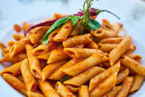

LET'S COOK SOME DELICIOUS PASTA! YAY!

Pasta is a type of food made from a mixture of flour, eggs, and water that is formed into different shapes and then boiled. Spaghetti, macaroni, and noodles are types of pasta.
INGREDIENTS:
- uncooked pasta
- A large pot
- cold water
- fresh basil
- tomatoes
- fresh mint
- onions
- chicke breast
- sesame oil
- hoisin sauce
- bell pepper
RECIPE:
- Bring a large pot of lightly salted water to a boil. Cook pasta in the boiling water, stirring occasionally, until tender yet firm to the bite, about 12 minutes. Drain and rinse with cold water.
- Tear chicken apart into strands similar in width to the spaghetti. Refrigerate until ready to use.
- Transfer spaghetti to a mixing bowl; add the chicken, carrots, bell pepper, and green onions. Pour in the dressing and toss by hand until well combined. Seal the surface of the salad with plastic wrap and refrigerate, tossing occasionally, for 2 to 12 hours, the longer the better.
- Add peanuts, basil, mint, and cilantro to the salad. Toss well; taste and adjust for seasoning.